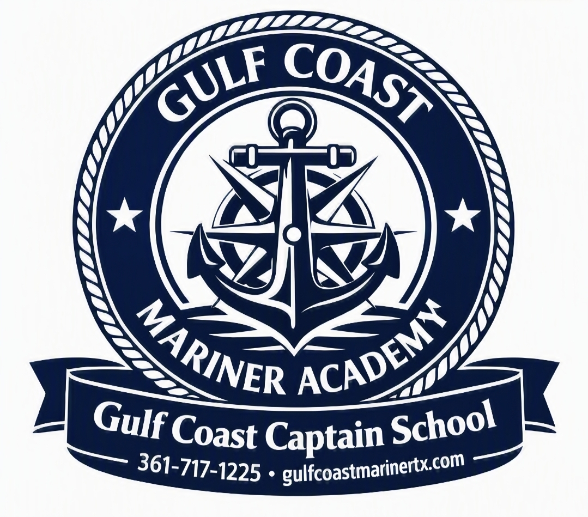

Gulf Coast Mariner Academy provides professional maritime training for current and aspiring captains seeking U.S. Coast Guard credentials and career advancement opportunities.
Led by Captain James Chadwick Sr., U.S. Coast Guard Master Captain, Assistance Towing Endorsement holder, Texas Parks & Wildlife Boater Education Instructor, and Army Veteran.
Phone: 361-717-1225
Email: captjames@gulfcoastmarinertx.com
Comprehensive preparation for mariners seeking a U.S. Coast Guard Operator of Uninspected Passenger Vessels credential.
Advanced instruction for mariners qualifying for Master Captain credentials.
Specialized training for mariners pursuing an Assistance Towing endorsement.
Currently Pending U.S. Coast Guard Approval
Join our waitlist to receive updates regarding course availability, enrollment dates, and academy announcements.